At the northern tip of Kefalonia, where the Ionian Sea softly embraces the shore, Kaminakia invites you to slow down.
Set above a small cove and surrounded by olive and cypress trees, our adults-only apartments offer a quiet sanctuary where sea views and gentle rhythms shape each day.
More than a place to stay, Kaminakia is an invitation to rest deeply, breathe freely, and let time unfold at its own unhurried pace.Every corner of Kaminakia invites quiet contemplation and restful unfolding, an environment where both body and mind can breath with ease.
We believe in sophisticated simplicity – subtle touches that ensure our haven feels inviting and lived-in, never sterile or cold, always in harmony with the surrounding landscape.
A comfortable apartment, a pool in the midst of a cypress forest, and a quiet space to just be.
Just a peaceful stroll away from the picturesque port of Fiscardo and the shimmering waters of its most beloved beaches. And yet here, the world seems to pause, as if exhaling, and time loosens its grip...
From your veranda, the sea stretches wide, a canvas of shifting blues, where the hush of waves speaks in soft rhythms, lulling you into stillness.
Below, orange and lemon trees sway in the breeze, their blossoms sweetening the air with quiet joy. The scent, the sound, the view... each a gentle reminder: you’ve arrived in a place where time ripens slowly.
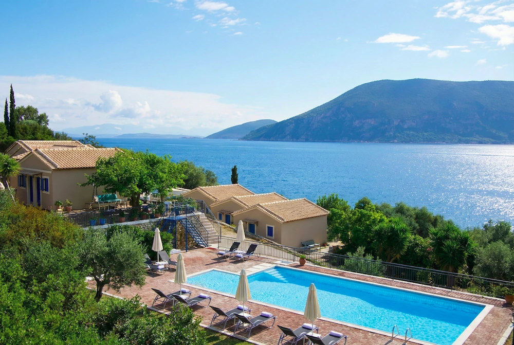
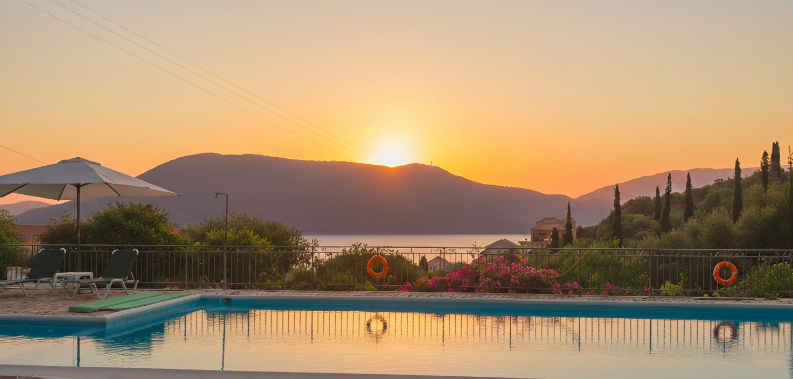
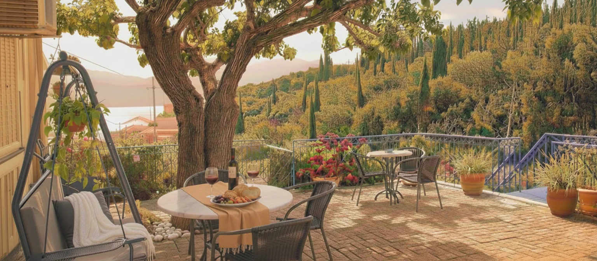
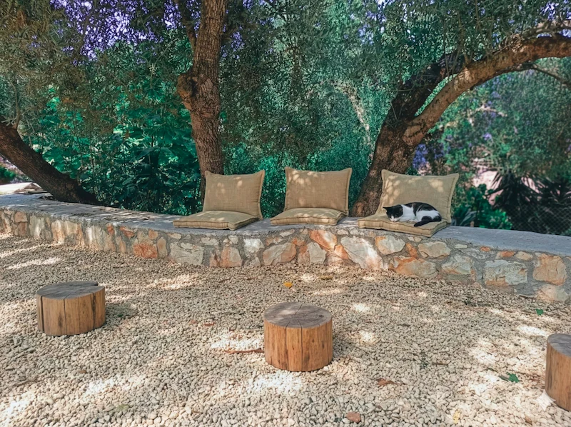
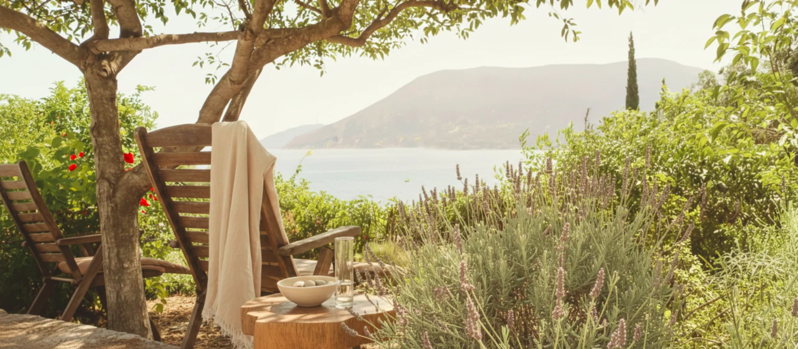
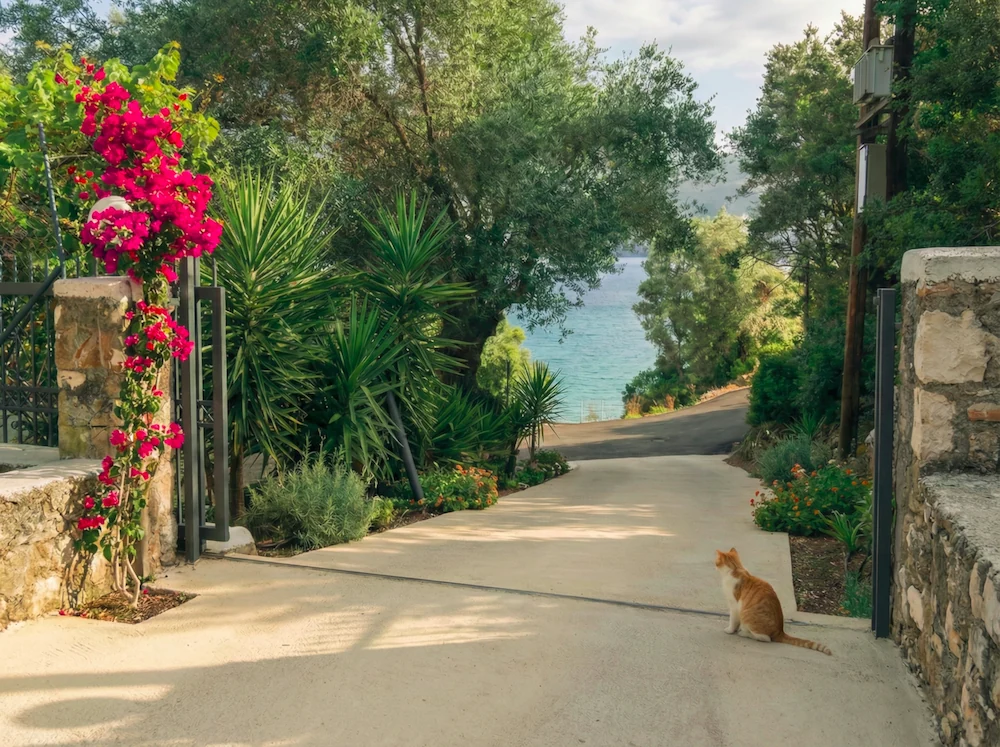
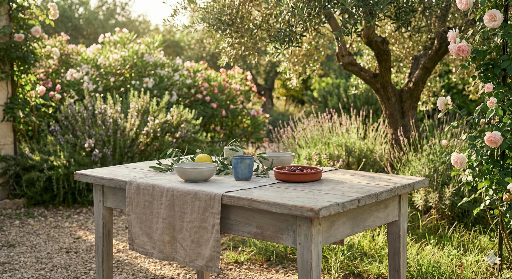
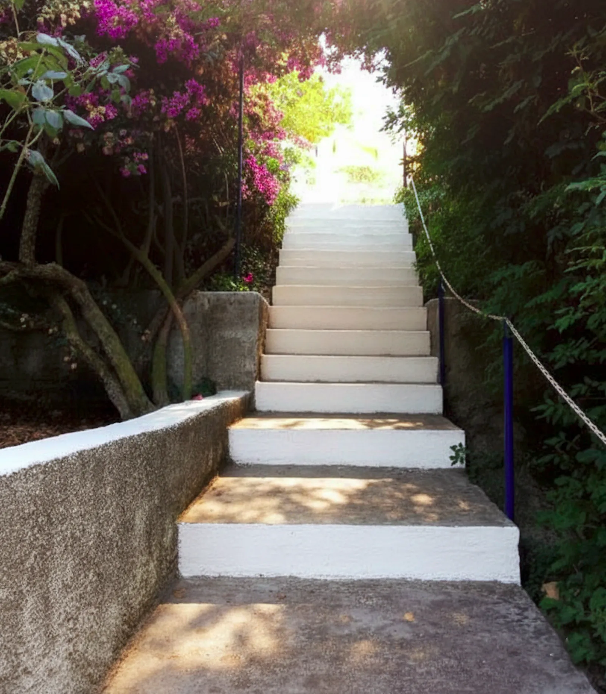
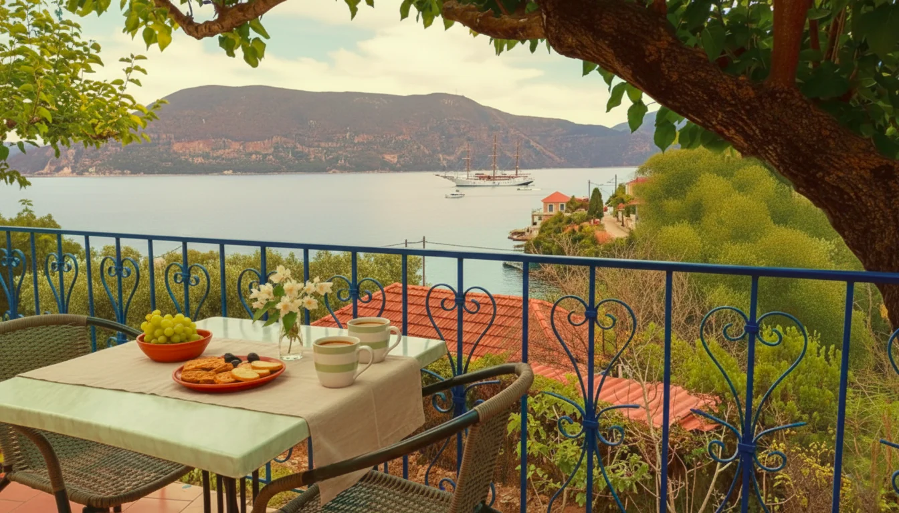
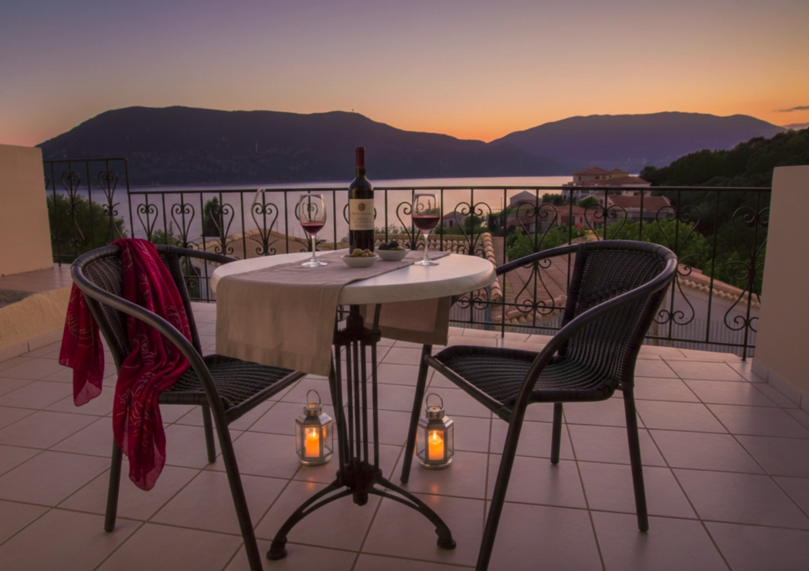
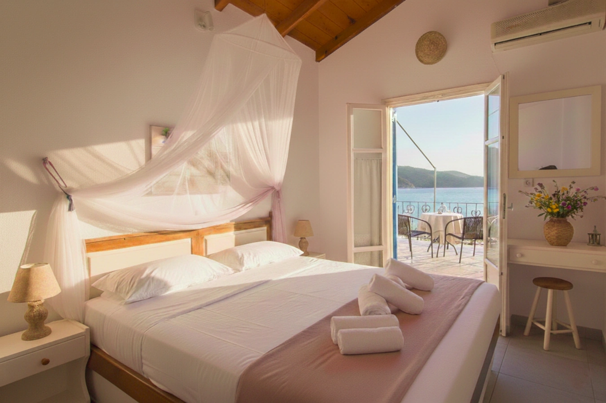
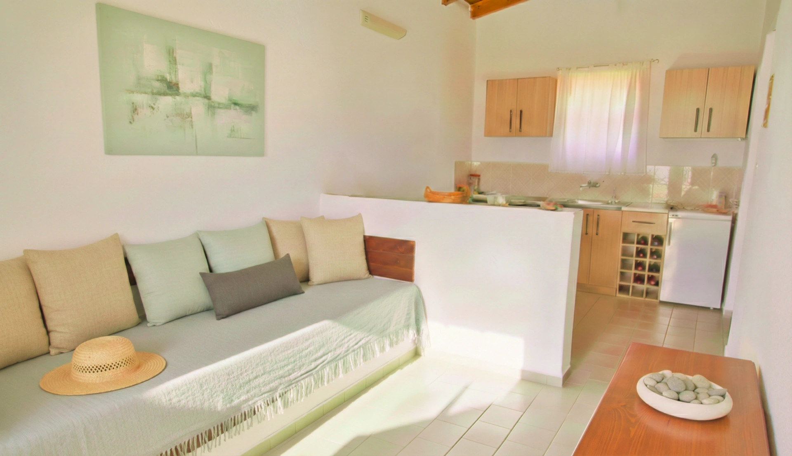
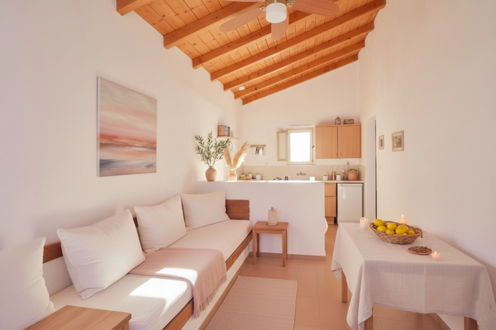
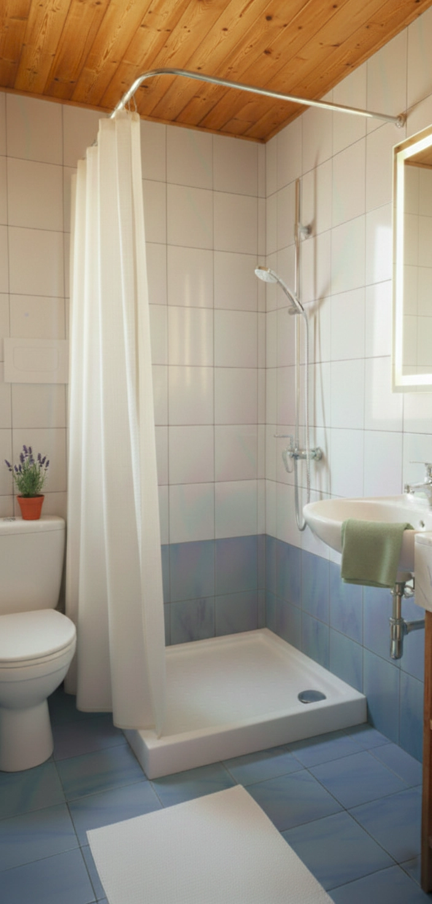
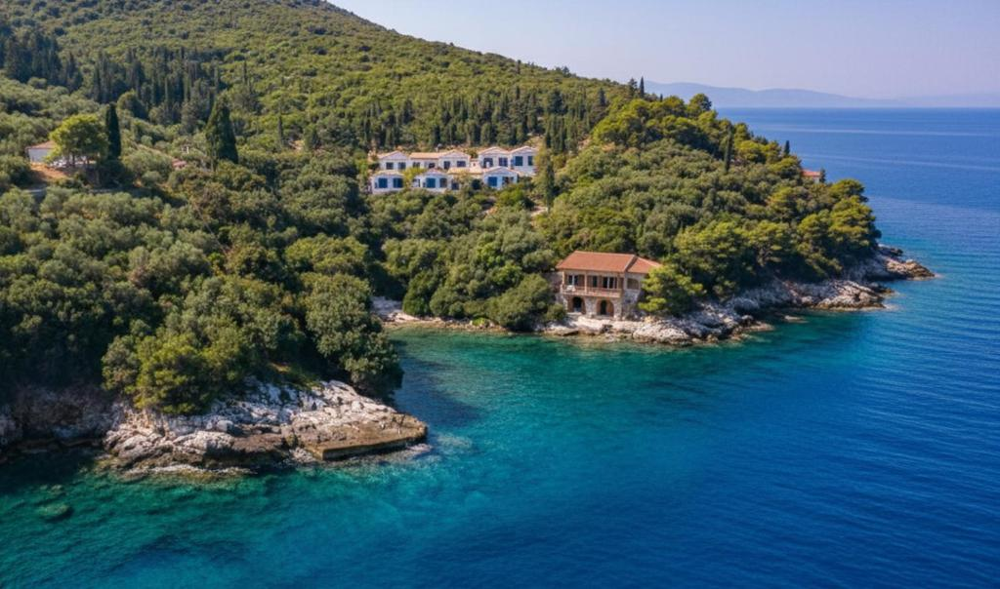
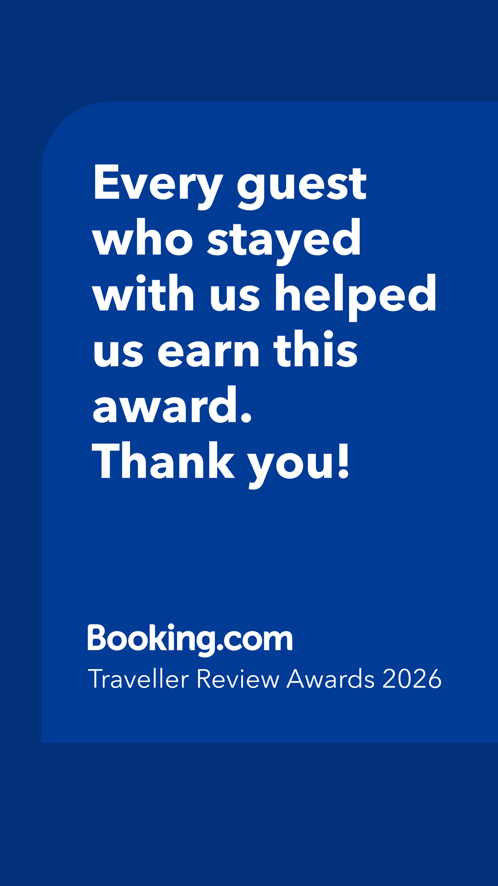
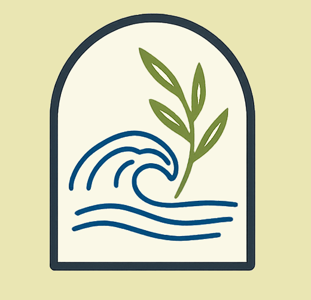
Three thoughtfully designed stay options, all overlooking the Ionian Sea. Simple, quiet spaces created for rest, privacy and slow island living. All units are adults-only, non smoking and feature private sea-view verandas.
While these descriptions offer guidance, feel free to choose the option that best suits your needs and preferences.
Compact and economical, our studios are nestled on the upper row.
They're perfect for those who love to explore the island by day and return to a peaceful sanctuary where they can whip up a simple meal and unwind after a full day.
More spacious and located on the front row, these Apartments are ideal for guests who cherish time at their 'home away from home.'
Here, you'll discover ample room to truly stretch out, find your quiet corner, and settle in.
Whether you're savoring a leisurely homemade dinner, diving into a good book, or simply unwinding with a quiet drink as the day gently fades into evening, this space is designed for those peaceful mornings and serene evenings where the greatest luxury is the quiet comfort of your own space.
This option offers an added layer of seclusion and tranquility.
As upper-floor, leftmost units, they provide enhanced privacy along with truly stunning views, a perfect spot for quiet contemplation.
Every reply comes directly from us. No bots, no booking engines, so we can tailor your stay to your unique needs. The quickest way to reach us is WhatsApp, and you can also email us. Using the form below, you can choose either option with a single click.
To ensure Kaminakia remains quiet and unhurried, we can only welcome a limited number of guests at any time. We appreciate your understanding should you find our calendar occasionally full.